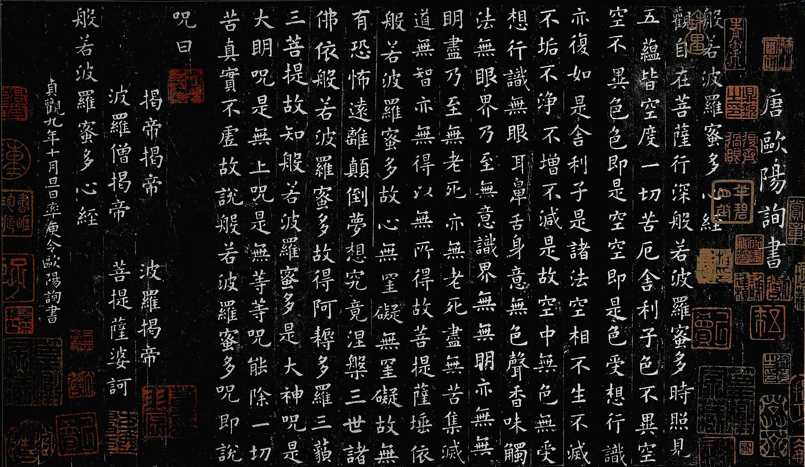

<!DOCTYPE html>


<html lang="en">
  

    <head>
      <meta charset="utf-8" />
        
      <meta
        name="viewport"
        content="width=device-width, initial-scale=1, maximum-scale=1"
      />
      <title>心经 |  邢景龙的博客</title>
  <meta name="generator" content="hexo-theme-ayer">
      
      <link rel="shortcut icon" href="/favicon.ico" />
       
<link rel="stylesheet" href="/dist/main.css">

      
<link rel="stylesheet" href="/css/fonts/remixicon.css">

      
<link rel="stylesheet" href="/css/custom.css">
 
      <script src="https://cdn.staticfile.org/pace/1.2.4/pace.min.js"></script>
       
 

      <link
        rel="stylesheet"
        href="https://cdn.jsdelivr.net/npm/@sweetalert2/theme-bulma@5.0.1/bulma.min.css"
      />
      <script src="https://cdn.jsdelivr.net/npm/sweetalert2@11.0.19/dist/sweetalert2.min.js"></script>

      <!-- mermaid -->
      
      <style>
        .swal2-styled.swal2-confirm {
          font-size: 1.6rem;
        }
      </style>
    <link rel="alternate" href="/atom.xml" title="邢景龙的博客" type="application/atom+xml">
</head>
  </html>
</html>


<body>
  <div id="app">
    
      
    <main class="content on">
      <section class="outer">
  <article
  id="post-心经"
  class="article article-type-post"
  itemscope
  itemprop="blogPost"
  data-scroll-reveal
>
  <div class="article-inner">
    
    <header class="article-header">
       
<h1 class="article-title sea-center" style="border-left:0" itemprop="name">
  心经
</h1>
 

      
    </header>
     
    <div class="article-meta">
      <a href="/2023/11/08/%E5%BF%83%E7%BB%8F/" class="article-date">
  <time datetime="2023-11-08T14:10:24.000Z" itemprop="datePublished">2023-11-08</time>
</a> 
  <div class="article-category">
    <a class="article-category-link" href="/categories/%E5%AE%97%E6%95%99/">宗教</a>
  </div>
  
<div class="word_count">
    <span class="post-time">
        <span class="post-meta-item-icon">
            <i class="ri-quill-pen-line"></i>
            <span class="post-meta-item-text"> Word count:</span>
            <span class="post-count">8.5k</span>
        </span>
    </span>

    <span class="post-time">
        &nbsp; | &nbsp;
        <span class="post-meta-item-icon">
            <i class="ri-book-open-line"></i>
            <span class="post-meta-item-text"> Reading time≈</span>
            <span class="post-count">28 min</span>
        </span>
    </span>
</div>
 
    </div>
      


  
    <div class="article-entry" itemprop="articleBody">
       
  <p>《般若波罗蜜多心经》（梵语：प्रज्ञापारमिताहृदय，罗马化：Prajñāpāramitāhṛdaya；藏语：བཅོམ་ལྡན་འདས་མ་ཤེས་རབ་ཀྱི་ཕ་རོལ་ཏུ་ཕྱིན་པའི་སྙིང་པོ，威利转写：bcom ldan 'das ma shes rab kyi pha rol tu phyin pa’i snying po），是大乘佛教表达空性和般若波罗蜜观点的经典，又称《摩诃般若波罗蜜多心经》，简称《般若心经》、《心经》。本经是《大品般若经》的别生经，取自〈习应品〉和〈劝持品〉，乃《大般若经》的精要，无序分与流通分。与《金刚经》并为通行最广的般若经，地位重要，曾被称作《经王》。藏密以此经典为般若佛母，为般若波罗蜜形象化的本尊。</p>
<p></p>
<p>观自在菩萨</p>
<p>行深般若波罗蜜多时，照见五蕴皆空，度一切苦厄。</p>
<p>舍利子，色不异空，空不异色，色即是空，空即是色。</p>
<p>受想行识，亦复如是。</p>
<p>舍利子，是诸法空相，</p>
<p>不生不灭，不垢不净，不增不减，</p>
<p>是故空中无色，无受想行识，</p>
<p>无眼耳鼻舌身意，无色声香味触法，无眼界，</p>
<p>乃至无意识界。无无明，亦无无明尽，</p>
<p>乃至无老死，亦无老死尽。</p>
<p>无苦集灭道，无智亦无得，以无所得故。</p>
<p>菩提萨埵，依般若波罗蜜多故，心无挂碍。</p>
<p>无挂碍故，无有恐怖，远离颠倒梦想，究竟涅槃。</p>
<p>三世诸佛，依般若波罗蜜多故，得阿耨多罗三藐三菩提。</p>
<p>故知般若波罗蜜多，是大神咒，是大明咒，</p>
<p>是无上咒，是无等等咒。能除一切苦，真实不虚。</p>
<p>故说般若波罗蜜多咒。</p>
<p>即说咒曰：</p>
<p>揭谛揭谛，波罗揭谛，波罗僧揭谛，菩提萨婆诃。</p>
<hr>
<p><em><strong>般若波罗密多心经释解：</strong></em></p>
<p>凡人要度苦厄，了生死，成大觉，非从自心下手不可。但要明白自心，只依这二百六十个字，已经够了。但空的道理不明白，自心的相貌也难彻了。这个经，最主要是说性空的道理，不是世人所说的空，那是断灭空，他们误解佛法是消极自了的。今把此经判分七段，用白话来逐字逐句解释，使世人明白空的真义，不至误会造业。由此断一切苦厄，并可发大悲平等心救世，证明佛法在社会上的大用，实是开发世界大同唯一的法宝。</p>
<p>**【般若】**这是梵文，我国名为大智慧。因为中国文字难尽其义，所以仍用原文，并且尊重这几个字，所以不译。这个般若，全是说心的妙用。上自佛，下至众生，无不由此而成佛道，了生死，度苦厄。论其性体，是不生不灭的金刚;论其相貌，却是无形无状的实相;论其妙用，乃是不可测知的圆通神妙。这个般若，是人人有分的，佛和众生都是平等的;不过佛是开了般若慧，众生是有而不开，被无明所蒙住了。至于般若两个字，解释却有许多字，当云“通达世间法出世间法，融通无碍，恰到好处，而又不执取诸法的大智慧。”才能尽其义。因为世间法人事等等，都是佛法。佛是觉义，能觉悟世上一切人情世故。尽了人道，才可成佛。总之，入世出世，只是一心，颠倒烦恼，贪嗔痴迷，是六道众生的心;如能空净自在，不固执，便是佛菩萨的心。所以离世法，便没有佛法;离了般若，只有作孽受苦厄的分了。</p>
<p><strong>【波罗】</strong> 此言彼岸;因为有个度字，所以假定一条生死河，众生在苦恼的此岸，要度过到清净的彼岸，用来比喻，不是真有此岸彼岸。</p>
<p><strong>【蜜】</strong> 是到的意思，是到了果位了。果位是究竟涅盘，涅盘就是清净。</p>
<p>**【多】**是上面的意思。到彼岸之上，才是究竟。现在假分五步：第一步在此岸;第二步入流，是下了渡船了，是初发心的人，亦是初果罗汉;第三步是中流，船在河中间，如声闻缘觉;第四步到了彼岸，是十地以下的菩萨，终不是究竟;必第五步上岸，“多”舍去了船，即是舍去了法见，扫除了执心，斯是了无挂碍的等觉菩萨和佛。</p>
<p>**【心】**心是什么?是个影子，不能说有，不能说无：所以无形段，不过是六根（眼、耳、鼻、舌、身、意）和六尘（色、声、香、味、触、法）相对起了认识，叫做六识（眼识、耳识、鼻识、舌识、身识、意识），所以是集起的。就是心同外境集合而缘起的幻影，即名幻心;心中起的道理，叫做幻法;执住个幻我成个幻见，于是成熟了，就有六道生死。但造成这个生死的是幻心，要开般若智慧了脱生死的，还是要用这幻心;成到佛（涅盘），也是用这幻心，你既然知道是幻的，那么就有幻心造成幻法，一切人事等等，六道生死涅盘，还不是一样是幻的?由此可觉本来没有生死，都是冤枉造作。既无生死，就用不着涅盘了，所以说诸法空相，涅盘生死等空华，即是此意。但又为什么分真心妄心呢?这是不得已而替初学的人说，其实心，根本不有，不可得，又分什么真和妄呢?不过幻心不能除，人事上一切的幻用不能废，所以权分真心妄心。真心是无心之心，何以叫无心之心呢?即是不起念时，而见闻觉知仍旧了了，却无分别，寂然不动的，此是真心;如一起了念，分别人事，而可以心不颠倒，亦不逐境流浪，顿然归到无心本位，此还是真心。至于念念流浪，不觉渐渐入了迷途，此名妄心，但本体勿失的。这部心经，就教你凛觉的法子，用智慧观照什么是心?什么是苦厄?又如何回归到清净寂灭无心之心的本位?所以名为般若波罗蜜多心经。</p>
<p>**【经】**有许多意思：如“路”，指示我们回复真心之路的;“法”，一切方法;“贯”，贯通前后的义理;“契”，契合各人的机，各事的理，有这几种解释。现在二百六十个字，是文字般若，指示我们观照般若的方法;照此去做，实证实相般若的究竟，总不出众生心行中事，所以经是完全指我们自身而说的。  　　此经共有七个翻译，这是唐朝三藏大师玄奘所译，文是简单的，义是深奥的。虽有七译，意义是一样的。读经当重意义，不可徒在文字上死执。此经是替大乘菩萨登佛位说的，表至高无上的佛境，意境只有自己晓得，说不出的，所以叫做无字真经。并不是真的无字，愿学人自己领会自己的境界，到了如何地位;至于佛的境界，却不是二乘人或十地以下的菩萨可以测知的。我们东土人，大乘根器多而厚，所以不论男的女的，识字不识字，都喜欢读这个经;譬如人闻香，个个人知道香味好，但多半不知道是什么香;而受薰是平等的，所以不可思议。以上释题竟。</p>
<p>**【观】**定下了心，运想那个道理叫做观。这个观，是已证到果地圆成的妙观，不是因地初修作观的观，是大自在观，般若的大机大用已经启发，心无能观，亦无所观，是能所双忘的妙观。</p>
<p>**【自在】**是无可无不可的自在，不是自由。自由是不肯受拘束的，但环境不如你的意思，便苦了。独有自在，是到处能安，自然地不受环境所困，一切好坏随缘;乐亦不喜，苦亦不恼，知道他是本来空，自己有主宰的。这个自在，是指大自在。</p>
<p>**【菩萨】**是菩提萨埵的简称，能自己觉悟，再能觉悟人的谓之菩萨;所以是人天的导师，为三界的善知识。三界是：（一）欲界，由人的一部分下至五道;（二）色界，指天道;（三）无色界，指禅天;总是在六道中。菩萨分在家，出家，地前，登地，十地等觉，最高是一生补处菩萨，就是佛退位后，他来接位的，如此土的弥勒佛，西方的观世音大士。这个菩萨，是指十地等觉将登佛位的大自在菩萨。</p>
<p>**【行】 **心行，心中起种种妙观妙行的大用，作种种自利利他二事业。</p>
<p>**【深】 **不是深浅的深，是不可测量的意思，圆遍广大，究竟无上的妙行。</p>
<p><strong>【般若波罗蜜多】</strong> 上面已经解释过了，就说菩萨的功行，已到究竟地，登彼岸之上了。</p>
<p>**【时】**这时字关系甚大，显明到了这个境界的时候，正是果位的时候，已经断除一切烦恼，度尽苦厄，没有挂碍的了。在下两句“照见五蕴皆空，度一切苦厄”之后的意境，点明大自在的光景，不可草草。</p>
<p><strong>【照见】</strong> 朗然觉照，彻见无余的意思，是无功用的功用，毫不著意的觉照，心神会通的了。</p>
<p>**【五蕴】**指色、受、想、行、识，这五事蕴结不分，叫做五蕴。此言心和外境相蕴合，统名曰色。一个色字，包括五个字在内，并且包括外面一切一切有相相形形色色，内面无相相思想方面都在内。外境原是色，而我的眼、耳、鼻、舌、身、意也是色;外色和内色接触了，就有个受;既受了，就要去想象他，这是想;想到了，心中一行转念，这是行;转出那知识来，就是识;所以受想行识四个也还是色，总是幻心幻起的作用，成就种种的幻法。这个五蕴，是众生造孽受苦成立六道生死的资本，但也是开般若，除习气，度苦厄，了生死的工具，也就是佛菩萨成大觉度众生的工具。同要用五蕴，只是佛菩萨能照见本空，可以善用，不被所转，众生反被所缚;是在觉不觉，明空不明空之别，不要指定为不好的东西，反生了偏见。</p>
<p>**【皆】 **统统包尽无余，就是一切的意思。不但人空，法亦空，连照见亦空，因为照见亦是五蕴，所以称皆。</p>
<p>**【空】**世上的人，往往不明白空的道理，笼统说：空就是没有了。不知“空”有空间、虚空、空相、空义种种的分别。今分为两种：一空相，是有相的，如空屋，人满了，空相破了，所以“有”与“空”是相对的，这就是世人说的没有就是空了。经上另有十八空义，不必尽说。  　　至于佛经上所说的“空”，是空义，是性空，是本来空，是与一切万有相和合的，不是相对的，不是没有的，是有而空的。要明白这个空的意义，先得明白几点：所谓宇宙间一切形形色色，山河大地，日月星辰，下至一切用物、植物、动物和我的身体，都是有相相;还有我的思想、道理、人事、人情、喜怒哀乐，都是无相相;一切包括在内，总名曰色，在因地上总是空的。因为以上一切色，寻不出一件是有独立自性的。第一说有相的：拿布来比，布没有独立自性，变成为布的，须依于纱线而成;纱线不能自为纱线，必待棉花;棉花不能自有，必由种子;种子不能自种，必赖人工天时地肥等等。不必分析开来才空，在未成布成纱前，及正有布有纱时，他的本身是由众缘和合而成;因为是因缘生，所以无有实体，求其究竟相，毕竟不可得，身体亦是如此。所以一切一切，无自性，无实体，因缘生，不可得的，所以是性空。第二说无相的：拿心来说，心是什么?根本是不有，但只集起的是心。譬如夏天凉爽的席上，人睡得甜美之极，这时候便没有我，没有心;忽然蚊虫咬了一口觉得了，这觉得的便是蚊虫和我集合而起的心。此外一切都同此理，所以心也是无自性，因缘生，无实体，不可得的，所以是性空。因此物和心，无一不是空。但是有而空，是幻有的，这是性空，和一切一切分不开的;不是心物之外另有个空，也不是这个是空，那个不是空的。所以说到色，即不能离开空;说到空，就不能离开一切色。但要认明却是缘生幻有，又须切实知道这个空是因地本来空，是性空，非眼耳可以见闻，其义实空。  　　既决定知道一切一切是本空而幻有，那又何必执取当他是实呢!但世上一切人事，如何可废，我仍随缘应付;不是麻木无心，只是勿住，行云流水的到处自在，这才是真心空。佛说空是这个道理，世上盲目妄加批评，岂不可惜!世人果能明空，自然心勿执取，那贪得心，嗔恨心，痴迷心，自不会深入，天下没有极端的争夺了。佛法岂不是社会上最大的利益，有什么迷信可说呢!又修行人往往有口头禅，说：“莫著了空!”这是怕他执著空见，正因为他根本不曾明空，总在空有二见上作道理，格外搅扰不清了。所以明空则破色，破色则心空，这是断苦厄的第一法门!</p>
<p><strong>【度】</strong> 超脱的意思，就是登彼岸之上，法见都净了也。</p>
<p><strong>【一切】</strong> 包罗所有，净尽无余，凡有相无相，人我法我种种苦厄，尽包在内。</p>
<p>**【苦厄】**身上的痛苦，心上的不安，有相无相，粗细微细，都是苦厄。其实全由心起，我果无心，苦在何处?心果无见，厄在何处?不是不知，不是不受;因为有智慧知道本来空，能够知而有若无知，受而等于不受;譬如两个人同时受苦，一个挡不住，甚至苦上加苦，因苦成病;一个却无所谓，心不著意，便无苦厄了。  　　以上四句判为总持分，是第一段，总三藏十二部经一切法，持无量义，亦是此经纲领。通了这四句，就明白心经宗旨了。照此做去，自然度苦厄，了生死，出三界，成佛道，绰乎有余的了。凡不明心要的人，总在文字上会，不肯从自心上会;弄得没有办法时，只好今日求佛，明日求法;下此者，求福报，求神通，死要一个有相的凭据，离佛道更远了。深入迷途，岂不可痛!</p>
<p><strong>【舍利子】</strong> 佛弟子的名字，即是舍利弗;在声闻乘中，他是智慧第一。</p>
<p>**【色不异空，空不异色，色即是空，空即是色，受想行识，亦复如是】**首四句实是一个意思，总是说色空不二的道理。初说不异，说没有两样的，还是方便的说;后说即是，是说就是一个，不能分的，是究竟说;斩金截铁，毫无犹豫。色一个字，不单是代表五蕴，连外面宇宙万有形形色色都包在内。因为宇宙万有，就没有离了我的性海，浑同一体，尽是色;而我的受、想、行、识，是无相相，也是色。这内外两种色，都是因缘生，无自性，无实体，不可得，根本是性空。现下虽是幻有，毕竟不可得的，所以即色即空，并不是色之外另有个空。参透上面所说的空义，就知道这个意义了。所以心的形形种种，亦是五蕴流转;而色的形形种种，全似空华的乱起乱灭，如电影的一幕一幕，总是有而不可得。你莫把这四句看作玄妙，实是极普通极寻常的道理。你只认明“一切是因缘生，无自性，无实体，不可得，所以是性空”。不但色如是，受、想、行、识四蕴也如是;不但五蕴如是，宇宙万有的有相相，和下面一切法，如十八界，十二因缘，四谛法，六度万行的智得等，是无相相，一切皆复如是的性空。但是凡夫执有，所以说色不异空;二乘又执空，所以说空不异色;还有菩萨未曾会通不二的，所以说色即是空，空即是色，总是破他们的法见。倘明白法见也是本空，就了无挂碍的了。  　　以上七句判为色空分，为第二段，用以会通色空不二的道理。</p>
<p><strong>【舍利子】</strong> 此时要点到本来上，在紧要关头了，故又呼其名而告之，是郑重的意思。</p>
<p>**【是诸法空相】**法是什么?是心影，是心中缘起的种种道理。如果没有对象，也就没有心没有法了，所以是因缘生、生而不生，无自性，无实物，不可得，本来是空，不是造作出来的空。古人说：心生法生，心灭法灭，心既是幻，法岂是真!诸法是说一切法，就是一切心。世上的人，总是以心缘心，以法缘法，不知本空，遂当他实有，彼此固执住了，争执就此多了。这个相字，应作义字解，下面正点到不生不灭的原理。</p>
<p>**【不生不灭】**佛经上最不容易了解的就是这一句，须知宇宙间一切一切连我的思想五蕴等等，都是不生不灭的。因为一切是：（一）不自生，如上面说布不能自生为布，是无自性的，须赖众缘和合而生。（二）不他生，不是单靠他缘，还不能离我这个布，所以也不是他生。那么是（三）共生的了?不!也不是共生，因为两面也都是缘生，两无实体，只是一个偶合，所以也不是共生。（四）不无因生，现在的假相，似乎是生，但必由因成果;没有可以成布的因，就没有成布的果。以此类推，一切一切是不生的，现在虽有相，终是生而不生的。既不生，即不灭;但现在的假相，却有个假灭，只是不自灭，如布烧成灰，布不能自烧;不他灭，虽有火烧，终不能离了布;不共灭，不无因灭，都是一个理，可以推想得到的。</p>
<p>**【不垢不净，不增不减】**因为不生不灭，所以垢净、增减、长短、是非、好坏、来去，一对一对的都是因分别而缘生，统统是幻有不可得，所有的相，本来是空相;因世事无一不由相对而成，苦恼也由相对而立。倘知根本是因缘生，无自性，无实体，不可得，根本是生而不生，不过暂时有这个虚妄相，那又何必执为实体呢?既不执有，亦不废有;即一切法，离一切法;既此用，离此用;心如长空万里，包罗一切，自在无住，此是诸法空相的本来面目，亦即无心可心的本来面目。但众生久已不知的了，有全不知者是六道众生，半知者是二乘，知而未彻者是菩萨，都是有挂碍。所谓有五部，有此岸，有入流，有中流，有彼岸而未登岸上种种。以上五句，判为本来分，为第三段，修行人最要紧是这一点，切勿忽过。</p>
<p><strong>【是故】</strong> 此是决定的口气。</p>
<p>**【空中无色，无受想行识，无眼耳鼻舌身意，无色声香味触法，无眼界，乃至无意识界】**既明白了空中的道理，那么空之中还有什么实体可得呢?这“无”字有两个解释：一是无有，是根本不有的意思。二是毋的意思。因为现在虽有幻相，但毕竟是无，毋庸执取以为实有而生法见，添许多烦恼。所以五蕴（色、受、想、行、识）、六根（眼、耳、鼻、舌、身、意）、六尘（色、声、香、味、触、法）这是十二入，再加上六识（眼识、耳识、鼻识、舌识、身识、意识）共为十八界，都是不可得;因为是缘生的，无自性的，无实体的，不可得的。然而人既有此幻身，自有幻心作用，不能断灭;佛菩萨也要用以度众生，救世间无量苦，我人正要用此以开般若，了生死，出三界，不过圣人明白本来空，所以无法执;众生迷了，遂生颠倒，这是众生的大挂碍。因为地狱众生，挂碍在具足多分贪嗔痴，鬼道挂碍于多分的贪，畜道挂碍于多分的痴，魔道挂碍于多分的嗔，人道挂碍于半分的贪嗔痴，天道挂碍于少分的贪。这贪、嗔、痴三毒，都由六根六尘六识而起，只一空字可以化除一切烦恼挂碍。化除了，当下即是菩提;所以烦恼菩提，同是这个东西。</p>
<p>**【无无明，亦无无明尽，乃至无老死，亦无老死尽】**这是缘觉（即辟支佛，是不曾闻到佛法而借因缘觉悟的）执取十二因缘法而生挂碍，他不知道诸法空相。既说是因缘，可见是缘生不实，但伊不能明空，被法见缚住了，不得自在。那十二因缘即是：一、无明：是过去的根本烦恼，只要碰到缘就动了。缘就是转下去的意思。二、无明缘行：行是行动，做种种或善或恶的行业。三、行缘识：由于过去的行业，而起现世受胎的一念，是因认识而成为果的。四、识缘名色：在胎中已有形体而有名色。五、名色缘六入：是六根具足，可以和六尘相对的了。六、六入缘触：是出胎后对于一切有所接触了。七、触缘受：接触之后，就受苦受乐而生种种感觉。八、受缘爱：如成年以后，就有强盛的爱欲。九、爱缘取：有了爱欲，就想去取得，心去四面驰求。十、取缘有：取得就有了，是有业成就的果位。十一、有缘生：这是成立了，生生不已，转入未来。十二、生缘老死：有生就有灭，一切本是梦幻泡影，终必变灭，老死是这一段生死的果。但只是无明未灭，再来一转，生生世世转辗不已，遂有六道轮回，总是无明作祟。乃至两个字，是由无明跳至老死，中间略去十位。这十二因缘，位位都依据无明作主，不知皆是妄心幻法缘起，根本无有。尽者，极也，就是无之极也，言无亦无有也，是绝对不可得的意思。所以无明非有实体，如空中华，梦中事;梦中非无，及至梦醒，了不可得。可惜众生不能断无明，缘缘而下，无有穷期，无非是惑业苦。缘觉虽已悟到十二因缘，原是假有的一合相;但以为是定法不移，所以法见不净而生挂碍。</p>
<p>**【无苦集灭道】**这是声闻执取四谛法，而生挂碍。苦、集、灭、道，是名四谛，就是四种重要的道理。苦是身心逼迫不安。众生身有三苦：老、病、死。心有三苦：贪、嗔、痴。后世有三苦：地狱、鬼、畜生。更有三灾八难苦、坏苦、行苦、苦苦、不知足苦、不安命苦、心无寄托苦，这是苦谛。却是三界六道生死苦果，无不由心和境集合而成，这是集谛。灭是消灭的意思，断一切苦，归到清净寂灭。因为结业既灭，则无生死的患累，这是灭谛。但要灭除那集合的诸苦，必得有个道理，道是正道;做到正道，必要助道，助其离一切苦，到涅盘乐，这是道谛。声闻执此法见以为究竟，所以分段生死，或者可了，变易生死却不易了。倘明本来空，知此四谛法，不过一时的缘生;不但是果上色空，实是因上色空，不必执取，便无挂碍了。</p>
<p>**【无智亦无得】**这是菩萨的挂碍。菩萨执取六度万行诸法，以为确有智慧可得，有众生可度，有佛可成，心中不免具此波罗蜜的行相，微细的法见不曾净，所以不到究竟涅盘地。从前阿难问佛如何是烦恼地狱种性?佛说行六波罗蜜行是烦恼地狱种;如我能布施，因见他人不肯布施而生厌恶，是烦恼地狱种;我能持戒等等，因见别人不能持戒等等，心生厌恨，是烦恼地狱种。这就是弥陀经上说的见浊，是名染法，染糊涂了。况且有智无智，都是幻心作用，分别为二。同是性空，更有何法可得?世尊昔在燃灯佛所得佛授记，成无上菩提，世尊当时并不取以为胜，因为知道性空!实无少法可得，不过名为菩提而已。所以菩萨必到法无我的时候，才是挂碍净尽。</p>
<p>**【以无所得故】**这是总结一句，极言上面五蕴、十八界、十二因缘、四谛法、六度智得一切本空，仔细推求，实无所得。以上十三句判为法用分，为第四段，说空了之后，般若法用自然启发，也不受法缚了。</p>
<p>**【菩提萨埵】 **简称就是菩萨，此指已登佛位的明心菩萨，又名开士、大士;又萨埵译为精进勇猛，堪以荷担如来事业的人。</p>
<p>**【依般若波罗蜜多故】**他因为依自性的金刚般若，能够超登彼岸的缘故，所以有下面实证的受用。我们应该知道修行不是图利，更不能图名，名利是生死最毒的药;名利的心不死，永无出头的日子。因此因地要正，总要在自性上打算，老老实实，真参实究，决不要在神通奇特，出语玄妙上求，丝毫挡不住生死的。菩萨尚不能离开般若，何况我辈，离了般若之外，更有何法?这是成佛的根本条件，肯向这条法上走的，才是有智慧的人，此生决可成就。</p>
<p>**【心无挂碍】**这个心，是毫无挂碍，人空法空，寂灭轻安的大自在心，视世间出世间一切一切皆量等虚空，无有边际，包罗万有，了无挂碍。心且不有，挂碍何依?苦厄安在?</p>
<p>**【无挂碍故，无有恐怖，远离颠倒梦想】**心里既是净空无见，白天没有想象，夜间自无乱梦，正如千眼千手，圆照十方，岂有颠倒?凡人恐怖，先有一个得失心，就是有我的果，正是六道生死的种性。如能心空法空，登于佛位，两个生死已了。菩萨再来世间，是大悲愿力，不是业力，自然没有恐怖，颠倒梦想，都远离了，到了生灭灭已，寂灭为乐的境界了。</p>
<p>**【究竟涅盘】**这涅盘是清净的意思。二乘人是有余涅盘，不是究竟;这究竟涅盘是佛位，名为无余涅盘，连涅盘亦不可得。所谓成了佛，也没有成佛的法见。本来涅盘是对生死说的，既本来没有生死，亦安有涅盘，不过同是个假名罢了。这是菩萨的果德。</p>
<p>**【三世诸佛】**无论现在佛，过去佛，未来佛，统包括三世一切诸佛，不问已成未成，都是一体平等。须知释迦弥陀是果上佛，我和六道众生是因上佛，性自平等，所以不可自弃，也不可轻人。</p>
<p>**【依般若波罗蜜多故，得阿耨多罗三藐三菩提】**三世诸佛，也无不由此法门而得无上菩提。一切大智慧，无不由自性佛母所生，生是启发的意思。这个得，正是无得之得;必得心中了无所得，然后本来的面目斯得。此时无人，无我，无众生，无寿者，寂然不动，而妙用恒沙，由此启发，这是佛的果德。阿耨多罗是无上，三藐是正等，三菩提是正觉;就是无上正等正觉，是言佛的意境。你想连佛也不能离此法门，众生岂可自外，另觅途径，岂非颠倒!所以不自求而他求，都是因地不正，适以自误!  　　以上十句判为果德分，为第五段，是说到果德地位，一切挂碍才算净尽，才是究竟涅盘，都赖观空成就，并无别法。又以上可算是上半部心经，专说此法无实。下面再翻身过来说个无虚，金刚经说：“此法无实无虚。”要人不要执实，也不要执虚，正显般若无住的妙用。若再深一层讲，心既不有，法于何依?既没有法，更谈不到无实无虚的了。所以说，涅盘生死等空华。</p>
<p>**【故知般若波罗蜜多】**以下是转入无虚，点明一知字的妙用。这知字是灵照觉知，表明悟后的意境，仿佛是转而为有;不知这知字也是法，也是性空，一时的缘生，暂时的法用，即是知而无知，生而不生;所以不明无生的道理，就不能证知真空的道理。前说一空字，是般若的体;此说一知字，是般若的用。所以表般若的至德，无可形容，无可言表;至此言语道断，心行处灭;惟有神会，惟有赞叹，正是冷暖自知的时候。</p>
<p>**【是大神咒，是大明咒，是无上咒，是无等等咒，能除一切苦，真实不虚】**这六句是赞叹的辞句。咒是密意，以决定如是曰咒，如军令严速曰咒。以无所不包谓之大;以无所不通谓之神;以无所不照谓之明;以无可比对无可再加谓之无上;以毕竟平等谓之无等等;空不偏空，有不著有，于寂灭无住的性体中，能启发恒沙妙用。六祖云：何期自性本不生灭，本不动摇;何期自性能生万法。前为无实之体，此为无虚之用;故能除一切苦，真实不虚。你想世上的人，没一个人没有挂碍的痛苦，哪一个人能离了佛法，佛法又何曾迷信呢!  　　以上七句判为证知分，分第六段，要亲证才知这个境界，不是靠文字可以得知的。所以得知的必须要真参实究，从自性上用功，经是不过借来考证罢了。总之，心通才是最大神通;但心不空就不能通，不通就不能明，不明则一切智慧被无明所覆，不能启发。这一分是说心到了真空的境界，自然有许多力量;不是有苦再除，却使一切苦厄无所依附，根本无苦厄的了。</p>
<p>**【故说般若波罗蜜多咒，即说咒曰：揭谛揭谛，波罗揭谛，波罗僧揭谛，菩提萨婆诃】**梵咒本来不许翻译的，因为怕持的人着了解释，反而添知见，心乱了。但此经是自利利他的，终不能忘记众生，离了大悲本愿。姑将咒义略述一二：揭谛揭谛，是说度过去呀!度过去呀!波罗揭谛，是向彼岸度过去呀!波罗僧揭谛，是彼岸大家度过去呀!菩提萨婆诃，是速速证到菩提呀!以上六句判为秘密分，为第七段，只有自己知道，没法出口的意思。</p>
<p>佛说的三藏十二部，总是说个心，这心经是说心内精华。大凡人有七个心，每每自己不知道的，那六个是六道心，每日流转勿停;忽而天道心，忽而人道心，又忽而三恶道心，总是无主的逐境流浪心。下等的人，并且不知道什么是叫做心，中等的人才知道善心恶心的分别心，上等人是多有向上的心，可以得人天的好果。还有第七个心是空心，是无上的心，是无住的心，是有主的心，是清净自在的心;这个心不是修证到是不会知道的，连二乘人和权乘菩萨也不会知道的。佛说：微生虫到处可去，只是火里不能去。众生的心到处可缘，只是不肯向般若上去，就是不知道那第七个心。这个心是出世的心，明了这个心，去成佛就不远了。众生在此岸，是六个心，超登彼岸，便是那第七个无心的心，正是毫无挂碍的心了。但人不从六个心上下手，就不能出世，要从烦恼上参透，挂碍上打开，方可成佛。譬如人已落在泥坑里，必要从泥里拔出来，所以世法正是出世的资粮。人先要明白烦恼是什么?还是我的六个心。</p>
 
      <!-- reward -->
      
      <div id="reword-out">
        <div id="reward-btn">
          Donate
        </div>
      </div>
      
    </div>
    

    <!-- copyright -->
    
    <div class="declare">
      <ul class="post-copyright">
        <li>
          <i class="ri-copyright-line"></i>
          <strong>Copyright： </strong>
          
          Copyright is owned by the author. For commercial reprints, please contact the author for authorization. For non-commercial reprints, please indicate the source.
          
        </li>
      </ul>
    </div>
    
    <footer class="article-footer">
       
<div class="share-btn">
      <span class="share-sns share-outer">
        <i class="ri-share-forward-line"></i>
        分享
      </span>
      <div class="share-wrap">
        <i class="arrow"></i>
        <div class="share-icons">
          
          <a class="weibo share-sns" href="javascript:;" data-type="weibo">
            <i class="ri-weibo-fill"></i>
          </a>
          <a class="weixin share-sns wxFab" href="javascript:;" data-type="weixin">
            <i class="ri-wechat-fill"></i>
          </a>
          <a class="qq share-sns" href="javascript:;" data-type="qq">
            <i class="ri-qq-fill"></i>
          </a>
          <a class="douban share-sns" href="javascript:;" data-type="douban">
            <i class="ri-douban-line"></i>
          </a>
          <!-- <a class="qzone share-sns" href="javascript:;" data-type="qzone">
            <i class="icon icon-qzone"></i>
          </a> -->
          
          <a class="facebook share-sns" href="javascript:;" data-type="facebook">
            <i class="ri-facebook-circle-fill"></i>
          </a>
          <a class="twitter share-sns" href="javascript:;" data-type="twitter">
            <i class="ri-twitter-fill"></i>
          </a>
          <a class="google share-sns" href="javascript:;" data-type="google">
            <i class="ri-google-fill"></i>
          </a>
        </div>
      </div>
</div>

<div class="wx-share-modal">
    <a class="modal-close" href="javascript:;"><i class="ri-close-circle-line"></i></a>
    <p>扫一扫，分享到微信</p>
    <div class="wx-qrcode">
      
    </div>
</div>

<div id="share-mask"></div>  
  <ul class="article-tag-list" itemprop="keywords"><li class="article-tag-list-item"><a class="article-tag-list-link" href="/tags/%E5%AE%97%E6%95%99/" rel="tag">宗教</a></li><li class="article-tag-list-item"><a class="article-tag-list-link" href="/tags/%E6%82%9F%E9%81%93/" rel="tag">悟道</a></li></ul>

    </footer>
  </div>

   
  <nav class="article-nav">
    
      <a href="/2023/11/08/%E6%91%87%E6%BB%9A%E9%9F%B3%E4%B9%90%E6%80%BB%E7%BB%93/" class="article-nav-link">
        <strong class="article-nav-caption">上一篇</strong>
        <div class="article-nav-title">
          
            摇滚音乐总结
          
        </div>
      </a>
    
    
      <a href="/2023/11/08/%E9%87%91%E5%88%9A%E7%BB%8F/" class="article-nav-link">
        <strong class="article-nav-caption">下一篇</strong>
        <div class="article-nav-title">金刚经</div>
      </a>
    
  </nav>

  
   
    
    <script src="https://cdn.staticfile.org/twikoo/1.4.18/twikoo.all.min.js"></script>
    <div id="twikoo" class="twikoo"></div>
    <script>
        twikoo.init({
            envId: ""
        })
    </script>
 
</article>

</section>
      <footer class="footer">
  <div class="outer">
    <ul>
      <li>
        Copyrights &copy;
        2015-2025
        <i class="ri-heart-fill heart_icon"></i> xingjinglong
      </li>
    </ul>
    <ul>
      <li>
        
      </li>
    </ul>
    <ul>
      <li>
        
        
        <span>
  <span><i class="ri-user-3-fill"></i>Visitors:<span id="busuanzi_value_site_uv"></span></span>
  <span class="division">|</span>
  <span><i class="ri-eye-fill"></i>Views:<span id="busuanzi_value_page_pv"></span></span>
</span>
        
      </li>
    </ul>
    <ul>
      
    </ul>
    <ul>
      
    </ul>
    <ul>
      <li>
        <!-- cnzz统计 -->
        
        <script type="text/javascript" src='https://s9.cnzz.com/z_stat.php?id=1278069914&amp;web_id=1278069914'></script>
        
      </li>
    </ul>
  </div>
</footer>    
    </main>
    <div class="float_btns">
      <div class="totop" id="totop">
  <i class="ri-arrow-up-line"></i>
</div>

<div class="todark" id="todark">
  <i class="ri-moon-line"></i>
</div>

    </div>
    <aside class="sidebar on">
      <button class="navbar-toggle"></button>
<nav class="navbar">
  
  <div class="logo">
    <a href="/"></a>
  </div>
  
  <ul class="nav nav-main">
    
    <li class="nav-item">
      <a class="nav-item-link" href="/">主页</a>
    </li>
    
    <li class="nav-item">
      <a class="nav-item-link" href="/archives">归档</a>
    </li>
    
    <li class="nav-item">
      <a class="nav-item-link" href="/categories">分类</a>
    </li>
    
    <li class="nav-item">
      <a class="nav-item-link" href="/tags">标签</a>
    </li>
    
    <li class="nav-item">
      <a class="nav-item-link" href="/friends">友链</a>
    </li>
    
    <li class="nav-item">
      <a class="nav-item-link" href="/about">关于我</a>
    </li>
    
  </ul>
</nav>
<nav class="navbar navbar-bottom">
  <ul class="nav">
    <li class="nav-item">
      
      <a class="nav-item-link nav-item-search"  title="Search">
        <i class="ri-search-line"></i>
      </a>
      
      
      <a class="nav-item-link" target="_blank" href="/atom.xml" title="RSS Feed">
        <i class="ri-rss-line"></i>
      </a>
      
    </li>
  </ul>
</nav>
<div class="search-form-wrap">
  <div class="local-search local-search-plugin">
  <input type="search" id="local-search-input" class="local-search-input" placeholder="Search...">
  <div id="local-search-result" class="local-search-result"></div>
</div>
</div>
    </aside>
    <div id="mask"></div>

<!-- #reward -->
<div id="reward">
  <span class="close"><i class="ri-close-line"></i></span>
  <p class="reward-p"><i class="ri-cup-line"></i>请我喝杯咖啡吧~</p>
  <div class="reward-box">
    
    <div class="reward-item">
      
      <span class="reward-type">支付宝</span>
    </div>
    
    
    <div class="reward-item">
      
      <span class="reward-type">微信</span>
    </div>
    
  </div>
</div>
    
<script src="/js/jquery-3.6.0.min.js"></script>
 
<script src="/js/lazyload.min.js"></script>

<!-- Tocbot -->
 
<script src="/js/tocbot.min.js"></script>

<script>
  tocbot.init({
    tocSelector: ".tocbot",
    contentSelector: ".article-entry",
    headingSelector: "h1, h2, h3, h4, h5, h6",
    hasInnerContainers: true,
    scrollSmooth: true,
    scrollContainer: "main",
    positionFixedSelector: ".tocbot",
    positionFixedClass: "is-position-fixed",
    fixedSidebarOffset: "auto",
  });
</script>

<script src="https://cdn.staticfile.org/jquery-modal/0.9.2/jquery.modal.min.js"></script>
<link
  rel="stylesheet"
  href="https://cdn.staticfile.org/jquery-modal/0.9.2/jquery.modal.min.css"
/>
<script src="https://cdn.staticfile.org/justifiedGallery/3.8.1/js/jquery.justifiedGallery.min.js"></script>

<script src="/dist/main.js"></script>

<!-- ImageViewer -->
 <!-- Root element of PhotoSwipe. Must have class pswp. -->
<div class="pswp" tabindex="-1" role="dialog" aria-hidden="true">

    <!-- Background of PhotoSwipe. 
         It's a separate element as animating opacity is faster than rgba(). -->
    <div class="pswp__bg"></div>

    <!-- Slides wrapper with overflow:hidden. -->
    <div class="pswp__scroll-wrap">

        <!-- Container that holds slides. 
            PhotoSwipe keeps only 3 of them in the DOM to save memory.
            Don't modify these 3 pswp__item elements, data is added later on. -->
        <div class="pswp__container">
            <div class="pswp__item"></div>
            <div class="pswp__item"></div>
            <div class="pswp__item"></div>
        </div>

        <!-- Default (PhotoSwipeUI_Default) interface on top of sliding area. Can be changed. -->
        <div class="pswp__ui pswp__ui--hidden">

            <div class="pswp__top-bar">

                <!--  Controls are self-explanatory. Order can be changed. -->

                <div class="pswp__counter"></div>

                <button class="pswp__button pswp__button--close" title="Close (Esc)"></button>

                <button class="pswp__button pswp__button--share" style="display:none" title="Share"></button>

                <button class="pswp__button pswp__button--fs" title="Toggle fullscreen"></button>

                <button class="pswp__button pswp__button--zoom" title="Zoom in/out"></button>

                <!-- Preloader demo http://codepen.io/dimsemenov/pen/yyBWoR -->
                <!-- element will get class pswp__preloader--active when preloader is running -->
                <div class="pswp__preloader">
                    <div class="pswp__preloader__icn">
                        <div class="pswp__preloader__cut">
                            <div class="pswp__preloader__donut"></div>
                        </div>
                    </div>
                </div>
            </div>

            <div class="pswp__share-modal pswp__share-modal--hidden pswp__single-tap">
                <div class="pswp__share-tooltip"></div>
            </div>

            <button class="pswp__button pswp__button--arrow--left" title="Previous (arrow left)">
            </button>

            <button class="pswp__button pswp__button--arrow--right" title="Next (arrow right)">
            </button>

            <div class="pswp__caption">
                <div class="pswp__caption__center"></div>
            </div>

        </div>

    </div>

</div>

<link rel="stylesheet" href="https://cdn.staticfile.org/photoswipe/4.1.3/photoswipe.min.css">
<link rel="stylesheet" href="https://cdn.staticfile.org/photoswipe/4.1.3/default-skin/default-skin.min.css">
<script src="https://cdn.staticfile.org/photoswipe/4.1.3/photoswipe.min.js"></script>
<script src="https://cdn.staticfile.org/photoswipe/4.1.3/photoswipe-ui-default.min.js"></script>

<script>
    function viewer_init() {
        let pswpElement = document.querySelectorAll('.pswp')[0];
        let $imgArr = document.querySelectorAll(('.article-entry img:not(.reward-img)'))

        $imgArr.forEach(($em, i) => {
            $em.onclick = () => {
                // slider展开状态
                // todo: 这样不好，后面改成状态
                if (document.querySelector('.left-col.show')) return
                let items = []
                $imgArr.forEach(($em2, i2) => {
                    let img = $em2.getAttribute('data-idx', i2)
                    let src = $em2.getAttribute('data-target') || $em2.getAttribute('src')
                    let title = $em2.getAttribute('alt')
                    // 获得原图尺寸
                    const image = new Image()
                    image.src = src
                    items.push({
                        src: src,
                        w: image.width || $em2.width,
                        h: image.height || $em2.height,
                        title: title
                    })
                })
                var gallery = new PhotoSwipe(pswpElement, PhotoSwipeUI_Default, items, {
                    index: parseInt(i)
                });
                gallery.init()
            }
        })
    }
    viewer_init()
</script> 
<!-- MathJax -->

<!-- Katex -->

<!-- busuanzi  -->
 
<script src="/js/busuanzi-2.3.pure.min.js"></script>
 
<!-- ClickLove -->

<!-- ClickBoom1 -->

<!-- ClickBoom2 -->

<!-- CodeCopy -->
 
<link rel="stylesheet" href="/css/clipboard.css">
 <script src="https://cdn.staticfile.org/clipboard.js/2.0.10/clipboard.min.js"></script>
<script>
  function wait(callback, seconds) {
    var timelag = null;
    timelag = window.setTimeout(callback, seconds);
  }
  !function (e, t, a) {
    var initCopyCode = function(){
      var copyHtml = '';
      copyHtml += '<button class="btn-copy" data-clipboard-snippet="">';
      copyHtml += '<i class="ri-file-copy-2-line"></i><span>COPY</span>';
      copyHtml += '</button>';
      $(".highlight .code pre").before(copyHtml);
      $(".article pre code").before(copyHtml);
      var clipboard = new ClipboardJS('.btn-copy', {
        target: function(trigger) {
          return trigger.nextElementSibling;
        }
      });
      clipboard.on('success', function(e) {
        let $btn = $(e.trigger);
        $btn.addClass('copied');
        let $icon = $($btn.find('i'));
        $icon.removeClass('ri-file-copy-2-line');
        $icon.addClass('ri-checkbox-circle-line');
        let $span = $($btn.find('span'));
        $span[0].innerText = 'COPIED';
        
        wait(function () { // 等待两秒钟后恢复
          $icon.removeClass('ri-checkbox-circle-line');
          $icon.addClass('ri-file-copy-2-line');
          $span[0].innerText = 'COPY';
        }, 2000);
      });
      clipboard.on('error', function(e) {
        e.clearSelection();
        let $btn = $(e.trigger);
        $btn.addClass('copy-failed');
        let $icon = $($btn.find('i'));
        $icon.removeClass('ri-file-copy-2-line');
        $icon.addClass('ri-time-line');
        let $span = $($btn.find('span'));
        $span[0].innerText = 'COPY FAILED';
        
        wait(function () { // 等待两秒钟后恢复
          $icon.removeClass('ri-time-line');
          $icon.addClass('ri-file-copy-2-line');
          $span[0].innerText = 'COPY';
        }, 2000);
      });
    }
    initCopyCode();
  }(window, document);
</script>
 
<!-- CanvasBackground -->

<script>
  if (window.mermaid) {
    mermaid.initialize({ theme: "forest" });
  }
</script>


    
    

  </div>
</body>

</html>